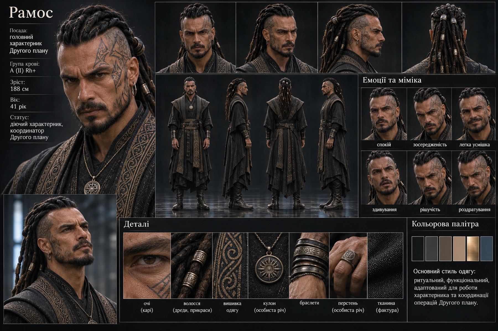

PROFILE
Chief kharakternyk of the Second Plan
Ramos leads the kharakternyky of the Second Plan. His work is connected with coordinating operations in the asteroid belt, where human ships oppose the Ragati.
Age: 41
Height: 188 cm
Blood group: A (II) Rh+
Status: active kharakternyk, coordinator of the Second Plan
ASTEROID BELT
Navigation and network deployment
Ramos agreed to lead the deployment of an observation network in the asteroid belt. A navigation point was established on one asteroid, allowing other ships to reach it without having to search for the target again.
DEFENCE
Countering the Ragati
Ramos coordinates human ships and defensive operations in the asteroid belt. When the Ragati change their tactics, he assesses the situation and organises the defenders’ next actions.
APPEARANCE
Ramos’s approved visual design features long dark dreadlocks, distinctive facial tattoos and dark clothing with bronze embroidery. His personality and personal relationships are not expanded here because there is not enough confirmed information to describe them reliably.